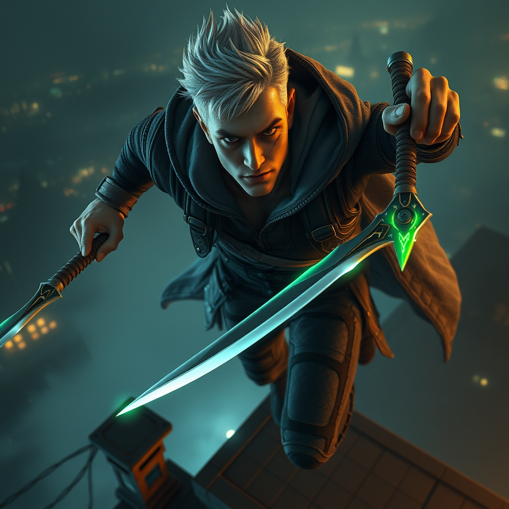

Đặc tả và kết quả kiểm thử quy trình tạo câu chuyện hoàn chỉnh & sinh Video/Audio
Xác minh kịch bản kiểm thử tích hợp đa phương thức nối tiếp: khởi tạo câu chuyện văn bản, vẽ hình ảnh minh họa cảnh truyện và tạo giọng nói thuyết minh lời thoại nhân vật.
Prompt: "Viết một đoạn văn cực ngắn (1 câu) kể về một chú robot nhỏ tìm thấy một bông hoa hướng dương rực rỡ."
Prompt: "Bông hoa hướng dương rực rỡ dưới nắng, chú robot nhỏ đang mỉm cười và tưới nước cho hoa."
Prompt: "Chú robot nhỏ nói với bông hoa: 'Chào bông hoa nhỏ, từ nay chúng ta là bạn nhé!'"
Thử nghiệm gọi API sinh video thực tế với khóa cấu hình FAL_KEY:
Kết quả xử lý lỗi: Bộ định tuyến video đã tự động phát hiện số dư tài khoản Fal bị hết (locked/exhausted) và phản hồi bằng video mẫu dự phòng chất lượng cao:
🔗 Majestic_Horse_Sunset_Video_Generation.mp4Thử nghiệm tích hợp hệ thống RAG và Visual Bible, đảm bảo tính nhất quán ngoại hình của sát thủ Kaelen khi vẽ ảnh qua các bối cảnh khác nhau.
Thông tin nhân vật (Canon Character - Kaelen):
kaelenQuy chuẩn phong cách (Visual Bible):
cinematic fantasy realism, photorealistic rendering style, highly rendered 8k concept art, detailed textures, raytraced reflections, volumetric atmospheric lighting, masterpieceaward-winning fantasy illustration, hyper-detailed digital artPrompt kiểm thử nhập vào: "Kaelen sitting at a tavern table under dim candlelight, examining a map"
Prompt biên dịch cuối cùng gửi tới API (RAG Augmented):
Kết quả sinh ảnh từ Hugging Face Inference API:
SUCCESS — RAG Context RetainedThử nghiệm tạo ảnh liên tiếp (Consecutive Scenes Consistency):
Mục tiêu: Xác thực nhân vật Kaelen xuất hiện nhất quán (tóc bạc, sẹo mắt, áo vest da, dao độc phát sáng xanh) giữa hai hành động khác nhau.
Cảnh 1: Lẻn trong lâu đài
"Kaelen sneaking in the shadowy castle corridors"
Cảnh 2: Nhảy từ mái nhà
"Kaelen jumping from a high roof at night"
